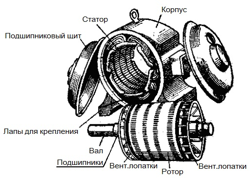

Обмотки сервомоторов и электрооборудования на переменном токе
Общая характеристика
Обмотки электрооборудования, работающего на переменном токе, используются как обмотки статора в синхронных и асинхронных машинах. Как правило, синхронное оборудование используется в качестве генераторов либо в качестве двигателей серводвигателей с датчиком положения ротора, а асинхронное в качестве двигателей.
Синхронные электродвигатели могут иметь явно или неявно-выраженные полюса. Отличие в устройстве роторов.
Асинхронный двигатель защищённого исполнения в разобранном виде
Обмотки для машин переменного тока могут быть однослойными или двухслойными. Двухслойные обмотки применяются в большинстве машин на переменном токе, в частности, большой и средней мощности. Однослойные обмотки применяют для микро и маломощного оборудования, мощностью до 7-10кВт включительно.
Среди преимуществ двухслойных обмоток, определяющих их повсеместное использование, выделяют :
- ➤ Cтандартная форма и размеры катушек, это упрощает производство катушек.
- ➤ Обеспечение возможности укорочения шага обмотки на нужное количество делений зубьев. Это позволяет подавить эдс высших гармоник и сократить траты обмоточных проводов.
- ➤ Форма лобовых частей упрощается, что также облегчает производство обмотки.
Двухслойные обмотки могут быть волновыми и петлевыми, также как обмотки якоря оборудования на постоянном токе. Эти обмотки равнозначны по электромагнитным характеристикам.
На производстве больше применяются петлевые обмотки. Волновой тип обмоток применяют при единичном числе витков катушки. Как правило, для переменного тока угловая зона будет равна 60. Реже может быть 120.
Обмотки статора многоскоростного асинхронного короткозамкнутого оборудования.
Для регулировки частоты вращения асинхронного оборудования используется изменение числа пар полюсов. Так для регулировки скорости вращения двигателя с короткозамкнутым ротором, достаточно изменить подключение обмоток статора. Настройка числа пар полюсов выполняется двумя путями: на статоре используются обмотки специального типа; на статоре применяются несколько обмоток.
Если у двигателя изменяется число пар полюсов, то он называется многоскоростным. Они могут производиться на 2-4 частоты вращения. Многоскоростные машины могут применяться для резки металла и обработки дерева на станках, в лифтовом оборудовании, в вентиляторах и кондиционерах, также насосах.